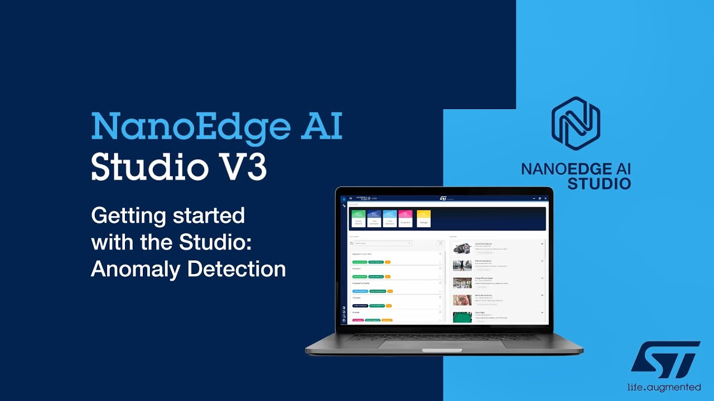

Acquisition
Acquisition
Capturer les vibrations de l’outil dans un cadre suffisamment stable pour distinguer l’état nominal d’une dérive.
Capture tool vibrations in a stable enough setup to distinguish nominal behavior from drift.
Alten · Airbus
Septembre 2023 — décembre 2023. Projet Airbus autour de la maintenance prédictive d’un outil de perçage sur mâts A320 / A350, via analyse vibratoire et NanoEdge AI Studio.
September 2023 — December 2023. Airbus project focused on predictive maintenance for a drilling tool on A320 / A350 pylons, using vibration analysis and NanoEdge AI Studio.
01 · Mission
01 · Mission
Chez Alten, j’ai contribué à une mission Airbus de maintenance prédictive d’un foret de perceuse à colonne utilisé sur des pièces composant les mâts A320 / A350. L’idée centrale : exploiter le spectre de vibration pour estimer le taux d’usure et anticiper les pannes, afin de réduire le coût de maintenance.
At Alten, I contributed to an Airbus predictive-maintenance mission for a column-drill bit used on parts that make up A320 / A350 pylons. The core idea: use the vibration spectrum to estimate wear and anticipate failures, reducing maintenance cost.
Mon périmètre portait sur le logiciel embarqué autour du STM32, la batterie de la carte et la remontée des sorties IA vers une interface web.
My scope focused on the STM32 embedded software, the board battery drivers, and streaming AI outputs back to a web interface.
02 · Approche
02 · Approach
Capturer les vibrations de l’outil dans un cadre suffisamment stable pour distinguer l’état nominal d’une dérive.
Capture tool vibrations in a stable enough setup to distinguish nominal behavior from drift.
Utiliser NanoEdge AI Studio pour générer une brique optimisée STM32 capable d’apprendre le comportement normal puis de détecter l’anomalie.
Use NanoEdge AI Studio to generate an STM32-optimized library able to learn normal behavior and then detect anomalies.
Renvoyer les sorties du modèle vers le web pour visualiser l’état de l’outil et préparer l’action de maintenance.
Stream model outputs to the web to visualize the tool state and prepare maintenance actions.
03 · Visuels
03 · Visuals
Visuels publics ALTEN / ST utilisés comme contexte métier et technique.
Public ALTEN / ST visuals used as business and technical context.

04 · Démo
04 · Demo
Cette vidéo n’est pas la démo interne du projet Airbus, mais elle montre une mise en œuvre publique très proche : STM32, capteur vibratoire, apprentissage nominal et détection d’anomalie.
This is not the internal Airbus project demo, but it shows a very close public setup: STM32, vibration sensor, nominal learning, and anomaly detection.
05 · Technique
05 · Tech
C · Python · STM32 · NanoEdge AI Studio · Vibration · Embedded / Web bridge
Points concrets côté implémentation : drivers batterie, acquisition / structuration de données, intégration d’IA embarquée, et socket STM32 ↔ web pour exploiter les résultats.
Concrete implementation points: battery drivers, data acquisition / structuring, embedded AI integration, and an STM32 ↔ web socket to use the outputs.
Source publique utilisée pour le contexte : communication ALTEN / ST autour de la maintenance prédictive d’outils de coupe et démo NanoEdge AI Studio.
Public sources used for context: ALTEN / ST communication around predictive maintenance for cutting tools and the NanoEdge AI Studio demo.